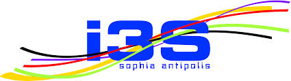

This website relies heavily on Javascript. It seems javascript is either blocked or your browser can't handle it, thus this message.
I swear you won't get any inconvenient advertisement. Please consider using a browser able to run javascript in order to benefits this website's features. Thank you.
M3 (Machine-to-Machine Measurement), SWoT (Semantic Web of Things). © Project in collaboration with

Designed and implemented by Amélie Gyrard, a PhD student at Eurecom under the supervision of Prof. Christian Bonnet and Dr. Karima Boudaoud.